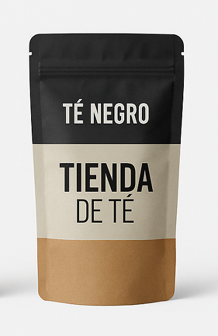
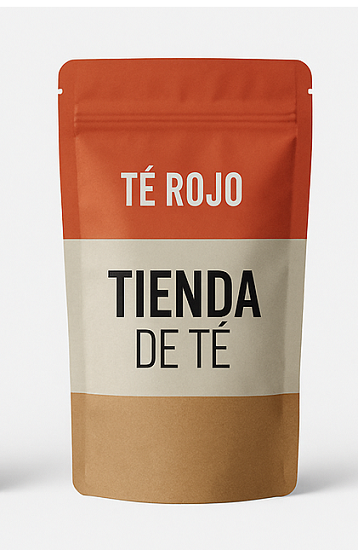
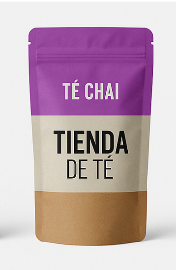
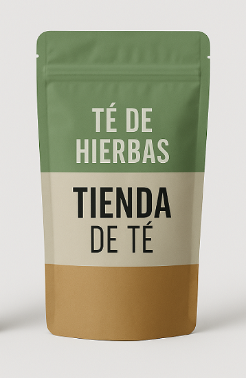

FRESCO Y ANTIOXIDANTE, EL TÉ VERDE ES TU ALIADO PARA UNA PAUSA SALUDABLE.
SU SABOR SUAVE Y NATURAL LO CONVIERTE EN LA OPCIÓN PERFECTA PARA REFRESCAR CUERPO Y MENTE.
Té Verde

INTENSO Y CON PERSONALIDAD, EL TÉ NEGRO TE APORTA LA ENERGÍA QUE NECESITÁS.
SUS NOTAS AHMUADAS Y ROBUSTAS LO HACEN UN CLÁSICO INFALIBLE.
Té Negro

RICO EN SABOR Y BENEFICIOS, EL TÉ ROJO ES CONOCIDO POR FAVORECER LA DIGESTIÓN.
SU GUSTO TERROSO Y SUAVE LO HACE PERFECTO PARA DESPUÉS DE LAS COMIDAS.
Té Rojo

UNA FUSIÓN DE ESPECIAS Y CALIDEZ, EL TÉ CHAI TE ENVUELVE CON SU AROMA ÚNICO.
CANELA, CLAVO Y JENGIBRE SE UNEN PARA UNA EXPERIENCIA SENSORIAL INOLVIDABLE.
Té Chai

NATURAL Y AROMÁTICO, EL TÉ DE HIERBAS ES UNA INFUSIÓN RELAJANTE Y REVITALIZANTE.
IDEAL PARA DISFRUTAR EN CUALQUIER MOMENTO DEL DÍA, SIN CAFEÍNA Y LLENO DE SABORES SUAVES.